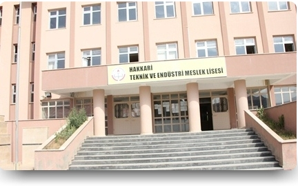

|
HAKKARİ TEKNİK VE ENDÜSTRİ MESLEK LİSESİ |
||||||
|
||||||
|
OKULUMUZ
 Okulumuz, 1982-1983 eğitim-öğretim yılında Tesviye, Yapı ve Elektrik bölümleri ile eğitim faaliyetlerine başlamıştır. Daha sonra 1986-1987 eğitim-öğretim yılında Sıhhi Tesisat bölümü, 1993-1994 eğitim-öğretim yılında ise Motor bölümü açılmıştır. Teknolojide yaşanan hızlı gelişmelerden eğitimde de yararlanmak amacıyla; öğrenci, veli ve çevre talepleri göz önünde bulundurularak okulumuzda Bilgisayar bölümü açılması için Bakanlığımıza teklif sunulmuştur. Bu teklif, Bakanlık tarafından uygun ve yerinde bulunmuş; 2004 yılında Bilgisayar bölümü eğitim kadrosuna eklenmiştir. |
|||||
|
Tüm hakları saklıdır. 2015 |
||||||